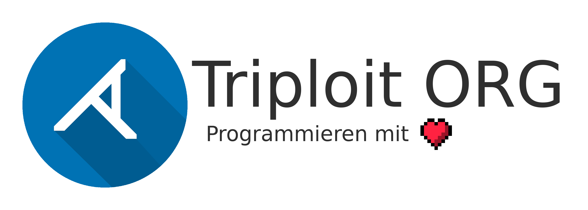

Über Triploit
Triploit ist eine Organisation bestehend aus Menschen, die zusammen Programmieren wollen.
Bisher sind nur wenige Personen dabei, jedoch möchte jeder seine Ambitionen verwirklichen und dabei
wird jedem geholfen.
Solltest du ein Problem haben, kannst du es gerne öffentlich bei uns ansprechen.
Oder aber du wendest dich an einen Administrator.
Wir auf GitHub
GitHub ist für Entwickler wohl die Plattform zum veröffentlichen von Source-Code. Daher haben auch wir
uns auf GitHub niedergelassen, um dort alle unsere Projekte zu veröffentlichen.
Beim Veröffentlichen gelten keine Grenzen, bis auf das Verbreiten von Schadcode und anderen gesetzeswidrigen Inhalten.
Besuch uns doch mal auf GitHub.
Unsere Projekte
Einige Projekte sind so ausgereift und sinnvoll, dass sie hier vorgestellt werden.
Wichtig ist noch zu sagen:
Computer machen keine Fehler, aber Menschen. Es kann immer
etwas schiefgehen, daher übernimmt jedes Mitglied der Organisation keine Haftung für alle Projekte,
an denen sie entwickeln und möglichen Schäden, die aus ihnen entstehen können.
BASM
BASM ist, wie der Name schon erahnen lässt, ein Pseudoassembler, gebaut, um Menschen den Einstieg
in die Assemblerprogrammierung etwas zu erleichtern.
Ein Hallo-Welt-Programm in BASM sieht folgendermaßen aus:
main: # Funktion main, die wird als erstes aufgerufen
push "Hallo Welt" # "Hallo Welt" auf den Stack legen
mov 10, hx # Setzt HX auf die Länge von "Hallo Welt" (10)
jmp write_string # Funktion write_string aufrufen
hlt # Das Programm stoppen
write_string: # Funktion write_string
.beg: # Sprungmarke beg
ptc # Schreibe das ASCII Zeichen des obersten Wertes des Stacks
pop # Entferne oberstes Element vom Stack
sub 1, hx # Subtrahiere 1 von HX
ggn beg # Wenn HX größer 0 ist, springt er zu beg
return # Funktion beenden, kehrt zu main zurück
Tridymite
Tridymite ist in Entwicklung und kann derzeit leider nicht verwendet werden.
Weiteres folgt später.
SecundoPM
SecundoPM ist veraltet, es sollte nicht benutzt werden. Zwar ist es völlig funktionsfähig,
jedoch empfehlen wir nicht damit weiterzuarbeiten.
Trotzdem soll hier eine kleine Erklärung folgen:
SecundoPM/SecPM ist der Nachfolger zu TRICL und ein ausgesprochen guter und einfach zu benutzender Paketmanager.
Um ihn zu nutzen muss er einfach nur heruntergeladen und mit GCC/G++ kompiliert werden. Danach reicht ein einfaches "./secpm install secundo-pm".
Auf Windows läuft der Paketmanager zwar auch, es ist jedoch nicht empfohlen in dort zu benutzen.
Ein Beispiel für ein Installer-Script:
func install
{
echo "Dieser Shellbefehl wird beim Installieren ausgeführt."
}
func remove
{
echo "Dieser Shellbefehl wird beim Entfernen des Paketes ausgeführt."
}
func update
{
echo "Ich rufe die Funktion install auf!"
&install
}
Wird dies in die Installer-Datei (in der GitHub Repo in pkg/ins.sc) geschrieben und das
Paket mit "secpm install [GitHub Username]:[Repo Name]", so wird beim installieren nun "Hallo Welt" ausgegeben.
Pakete können natürlich so erstellt werden. Es werden einfach die nötigen Shell-Befehle
in die Datei eingetragen.
| Argument in SecPM |
Skriptfunktion |
Beschreibung |
install <Nutzer>:<Paket> |
install |
Installiert eine Repository eines Nutzers von GitHub. |
update <Nutzer>:<Paket> |
update |
Aktualisiert ein Paket eines Nutzers auf GitHub. |
update all |
|
Aktualisiert alle installierten pakete. |
remove <Nutzer>:<Paket> |
remove |
Entfernt ein Paket eines Nutzers. |
local |
|
Einen lokalen Ordner als Paket installieren. |
trust |
|
Einem Nutzer vertrauen und keine Sicherheitsfragen bei der Installation stellen. |
untrust |
|
Einem Nutzer nicht mehr vertrauen. |
showtrust |
|
Alle Nutzer anzeigen, denen man vertraut. |
list |
|
Alle installierten Pakete anzeigen. |
AML
AML ist eine HTML basierende Sprache, die in Java geschrieben wurde. Der Compiler übersetzt den AML-Code in HTML-Code.
Allgemein ist AML viel kleiner als HTML, es ist überischtlicher und man muss weniger tippen.
Alles was in HTML möglich ist, ist auch in AML möglich, daher hat man keine schwierigkeiten mit neuen oder anderen Keywords etc.
Das einzige was sich ändert, ist der Syntax.
Schauen wir uns ein Beispiel an:
html {
head {
style {
div.farbig {
font-size: 30px;
color: green;
text-align: center;
}
}
}
body {
div (class: "farbig") {
"Hallo Welt!"
}
}
}
Wichtig ist hier, dass "Hallo Welt!" in Anführungszeichen steht.
Jeglicher Text, der kein Code (CSS, PHP, JavaScript) oder HTML-Tag ist, muss in Anführungszeichen stehen,
da er eben sonst als Tag interpretiert wird.
Daraus wird dann dieser HTML-Code:
<html>
<head>
<style>
div.farbig {
font-size: 30px;
color: green;
text-align: center;
}
</style>
</head>
<body>
<div class="farbig">
Hallo Welt!
</div>
</body>
</html>
Das sieht dann am Ende so aus:
Programmiersprachen
Da bei uns verschiedene Programmiersprachen von verschiedenen Personen verwendet werden,
ist es besser, wenn man einen einheitlichen Stil hat. Derzeit arbeiten wir an zwei verschiedenen.
Diese Standards werden nicht komplex und groß sein, in speziellen Fällen wird sicherlich nachgefragt werden müssen,
wie man bestimmte Sachen formatiert.
Bis diese Fälle jedoch eintreten, reicht eine grundlegende Beschreibung mit viel Beispielcode aus.
C++
C++ ist die erste Programmiersprache, die einen Standard bekommen hat.
Hier ist er zu finden.
Er wird hin und wieder erweitert und Kritik dazu kann unter den Kontaktdaten angegeben werden.
Java
Auch Java wird einen eigenen Standard bekommen.